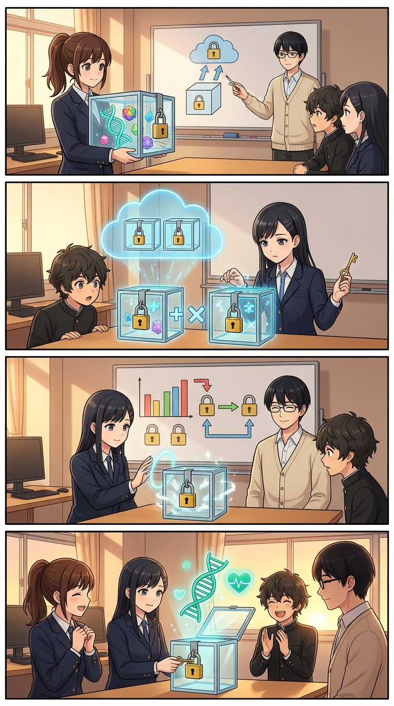
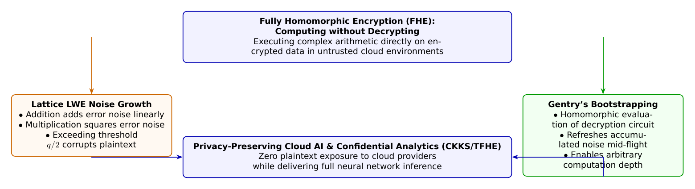

🎨 4コマ漫画挿絵（文字なし）
AI高解像度生成
▲ 【挿絵】青葉台高校 情報科学部＆帝都科学大学サイバーディフェンス・ラボでの実践シーン
💬 4コマ漫画キャラクターセリフ (Story Dialogue Script)
日・英バイリンガル (JA / EN)[蓮]「クラウド業者の内部不正やハッキングでデータが漏れたら、一生取り返しがつかないもんね」
[Ren] "If the cloud provider suffers an insider leak or hack, sensitive medical data is exposed forever!"
[葵]「えっ！？ 鍵がかかった金庫の中身を見ないで、どうやって中のお金を数えたり計算したりできるの！？」
[Aoi] "What!? How can someone calculate and manipulate contents inside a locked safe without ever unlocking it!?"
[蓮]「計算を重ねると蓄積する格子のノイズを、途中でリフレッシュして無限に計算を継続できるんだね！」
[Ren] "And bootstrapping refreshes accumulated lattice error noise mid-calculation, enabling arbitrary computation depths!"
[全員]「完全準同型暗号が、究極のプライバシーと最先端知能が調和する新世界を創る！」
[All] "Fully Homomorphic Encryption forges a new world where absolute privacy and cutting-edge AI unite!"
📖 小説本文
冬の柔らかな陽光が差し込む青葉台高校の情報科学部室。橘葵は、ノートPCの画面に表示された「最新AIゲノム解析・クラウド病気予測サービス」の同意画面を前に、マウスを握ったまま固まっていた。
「……ねえみんな、やっぱりこれ、ポチッて押せないよ」
葵が困り顔で振り返った。 「自分の全DNA配列や健康診断のデータをアメリカや海外のクラウドサーバにアップロードすれば、将来かかりやすい病気や最適な薬をAIが超高精度で予測してくれるらしいの。でも、私の遺伝子情報なんて究極の個人情報でしょ？ もしクラウドがハッキングされたり、サーバの管理者がデータを裏で学習に使ったりしたら、取り返しがつかないじゃない！」
神崎蓮が頷いた。 「葵先輩の懸念はもっともですよ。最近のAIは性能が凄まじい反面、処理を行うためには膨大な生データをクラウド上のGPUクラスタに平文（暗号化されていない状態）でメモリに展開しなければならない。どんなに通信路をTLSで暗号化していても、**『計算を実行するその瞬間』だけは暗号を解かざるを得ない**というのが、コンピュータの長年の常識でしたからね」
「その半世紀に及ぶコンピュータサイエンスの限界を打ち破ったのが、今日の講義テーマだよ」
ドアを開けて入ってきた城崎悠真が、透明なアクリルケースを取り出した。中には数字が書かれたカードが入っており、外側からは頑丈な真鍮の南京錠がかけられている。
「鍵を開けずに、箱の外側からマジックハンドで中の数字を並べ替え、足し算や掛け算をして、結果だけを箱の中に残す。そして持ち主だけが手元の鍵で箱を開けて答えを取り出す――それを数学的に実現するのが、**『完全準同型暗号（FHE: Fully Homomorphic Encryption）』**だ」
白石結衣がホワイトボードに駆け寄り、瞳を輝かせながら巨大な環の記号を描いた。 「1978年にRSA暗号の考案者であるリベスト（Rivest）、アドルマン（Adleman）、デルーゾス（Dertouzos）が提唱して以来、30年以上も『絶対に不可能な夢物語』と呼ばれ続けた現代暗号の聖杯（Holy Grail）です！ そして2009年、クレイグ・ジェントリー（Craig Gentry）博士が格子暗号を用いて世界で初めてその構成に成功しました！」
---
📊 セキュリティ構造図解 (TikZ LuaLaTeX生成)
国家安全基準・工学図解
▲ 【技術構造図】IPAデジタルスキル標準・国際規格に準拠した仕組みのモデル化